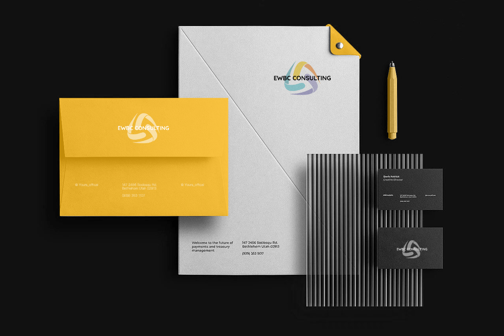
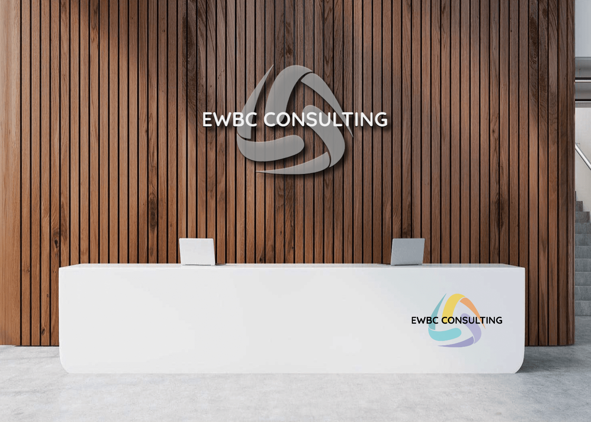
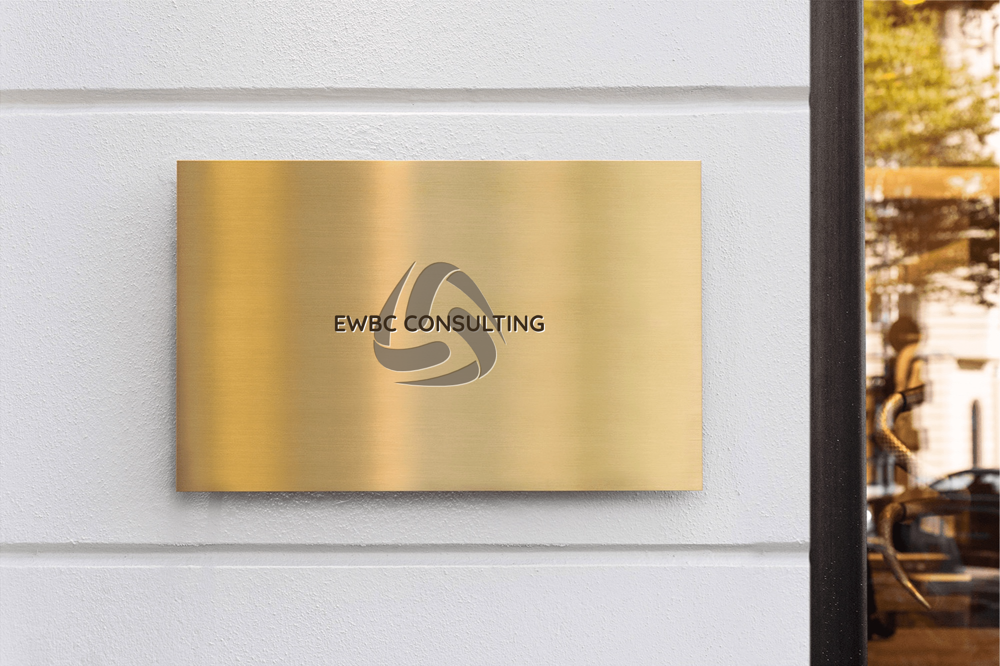

Better control
Clearer business direction, healthier decision-making, and more confidence in daily operations.
Empowering women globally
EWBC Consulting supports women from diverse business backgrounds to strengthen leadership, navigate opportunity, and build sustainable growth.
Clearer business direction, healthier decision-making, and more confidence in daily operations.
Support for leaders who want stronger traction without losing life balance or strategic clarity.
Business platforms that help women navigate opportunities across sectors and at a global scale.
What EWBC Consulting supports

Helping people get what they want from business and run better through clearer structure, priorities, and follow-through.

Advancing functional organisations that are more aligned, responsive, and sustainable for the people inside them.

Creating space for like-minded entrepreneurs to connect, share experience, and build momentum together.
Bella's profile
Bella's vision for EWBC Consulting is to empower women from various business backgrounds in business and leadership on a global scale. The firm helps clients gain better control, better life balance, and more traction while building a stronger platform for the next stage of growth.
The EWBC difference
Connect
The site is prepared for GitHub Pages on ewbcconsulting.com.au, with the companion bot and mailbox setup ready to be connected through Hostinger.